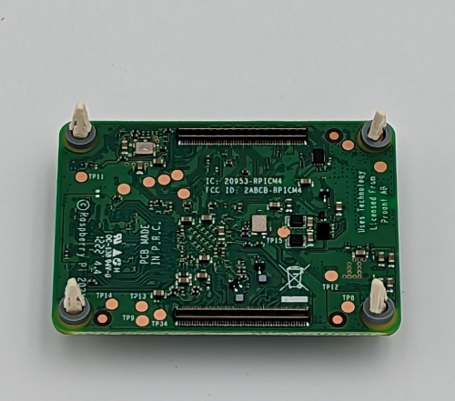
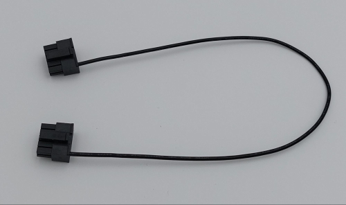
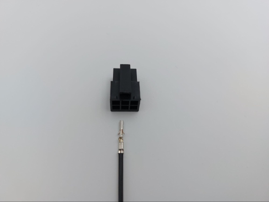

11. Pionix BelayBox¶
11.1. Introduction¶
The BelayBox is a reference platform specifically designed for development and testing of the open source software EVerest. More details about how EVerest is embedded on the hardware can be found in the dedicated sections about EVerest cross-compilation in the section “BelayBox use cases”.
The BelayBox is delivered as a development kit, which has to be assembled following the instructions in this documentation. Part of the kit is a Raspberry Pi CM4 compute module. PIONIX is officially part of the “Powered by Raspberry Pi” scheme:
{kind=link}
BelayBox can be utilized by individuals, research facilities and companies alike to
parallelize HW and SW developments for new charger projects,
explore new charging algorithms without the need do all the groundwork,
rapid integration of EV charging with other applications
and anything else you want to quickly do without building your own EVerest compatible charger first.
The BelayBox is not meant to be used for private usage or outdoor charging.
11.1.1. The BelayBox hardware¶
The BelayBox consists mainly of the Yeti board - an AC charger for electric vehicles (EV) supporting IEC-61851-1 and SAE J1772 - and the Yak board, which is a high-level control board for EV charging stations supporting ISO 15118-2 (with ISO 15118-20 on its way) and DIN SPEC70121.
As both - Yeti and Yak board - are released as Open Hardware under CERN Open Hardware Licence Version 2 (Permissive), we are very happy to point you to the schematics and design files and also the firmware:
The 3D files of the BelayBox case components can be downloaded here: BelayBox 3D files.
For more information about vendors working with EVerest, contact us via the EVerest mailing list.
11.1.2. Getting support¶
See also the BelayBox manual.
If you already have purchased a BelayBox kit and you have hardware related questions, you can get support by creating an issue via our support page.
Important
This is only for hardware-related support. For all software-related questions, you can find help in the wonderful EVerest community via Zulip or the EVerest mailinglist.
If you need additional parts for your BelayBox, see the Pionix Online Shop.
11.2. Setting up Hardware and Software¶
The Yeti board is delivered with a firmware already flashed on it. The Yak board does not have any software flashed on it.
In the following sections, we will show how to assemble the hardware parts and also how to do the flashing of the Yak board. The Yocto image for the Yak board includes binaries and services to run Basecamp - the commercial grade version of EVerest - as a demo.
BaseCamp is a professional and stable wrapper around the open-source charging software EVerest. For more information about the product of BaseCamp, see this BaseCamp page.
Note
In case you need to build a custom Yeti firmware, have a look at this repo: Yeti firmware GitHub repository here . Also see the section about how to flash the Yeti board.
11.2.1. Assembling the Yak Board¶
Starting assembling the Yak Board, you should have the following parts available:
And you will need the following tools:
ESD safe environment, e.g. ESD wrist band
ESD underlay mat
Linux host system, Ubuntu >18 recommended
1x Micro USB cable
12 V DC power supply with minimum 30 W to connect to “12 V IN” pins on Yak board. A lab power supply is sufficient.
Needed software:
bmaptool - see here
Internet access from host system
Warning
Before working with any open PCB make sure to work in an ESD safe environment using ESD safe equipment only.
Glue on the heatsinks as shown in the following image using the double sided tape that comes with the heatsinks. Plug in the small clips into the mounting holes of the CM4 board as shown.
Turn around the CM4 and put on the gray spacers as shown here:
Plug the CM4 board in both connectors and make sure the clips go all the way through the Yak board and hold the CM4 securely without any gaps between the spacers and both boards. Make sure to remove the metal part (if there is one) out of the board-to-board connector as shown in the upper left corner in the following image:

This is how it looks from the top side:
Now place the small black jumper onto the “BOOT” pins as shown above. This is needed to be able to make the emmC flash accessible to the host system.
11.2.2. Flashing the Yak Board¶
In this section, we will walk you through the process of deploying the Yocto-based image including EVerest in form of BaseCamp.
Note
You will only have to do this flashing procedure once. After that, you can use the RAUC updates, which are hosted on PIONIX update servers. In case you need to reflash the whole image, we will inform you in the public support channels.
If you want to create your own custom yocto image with EVerest, you can have a look at Yeti-Yak-SDK repository.
Now to the steps to flash the board:
Download the latest stable image and the matching .bmap file:
(2) Power up the BelayBox or - if the Yak is used alone - apply 12 V to the “12 IN” pins.
The red power LED on the Yak should light up constantly now.
Connect the Yak board via Micro-USB to the host system.
(4) Enable the CM4 storage mode so that the eMMC becomes available to the host system:
sudo rpiboot
The green LED on the Yak board should light up constantly now.
To find the eMMC device, do:
lsblk
Check the output and look for a approximately 16 GB device called /dev/sdX - where X can be any letter.
Warning
Make sure to select the correct device as data loss can occure if the wrong device is selected!
(6) Make sure the .wic.bz2 file and the .bmap file are in the same directory and flash the eMMC. In the command below, replace <image file>.bz2 with your downloaded image file and replace “X” according to your eMMC device.
sudo bmaptool copy <image file>.bz2 /dev/sdX
After roughly nine minutes the flashing should have finished.
Caution
Make sure to connect the WiFi antenna to the CM4 after flashing. The image activates the external antenna support. Running a flashed Yak without the WiFi antenna mounted can result in damage of the WiFi chip.
(7) Disconnect the eMMC device, power off and unplug the “boot” jumper from the Yak board.

With the raspberry CM4, it can be that the overlay filesystem sometimes does not get mounted in the right order; so you might have to reboot twice if some files are missing after flashing.
11.2.3. Assembling the Yeti Board¶
Here’s what you should have:
Tools needed:
ESD safe environment, e.g. ESD wrist band
ESD underlay mat
Clip on the touch protection cage and make sure all clips are correctly seated as shown here:
Clip in the smaller part of the touch protection and make sure all clips are correctly seated as shown here:

Clip in the bigger part of the touch protection and make sure all clips are correctly seated as shown in the following image:

Your mission can be seen as accomplished if your Yeti looks like that:
11.2.4. Preparing the cable set¶
That’s how we start:

The 10-position cable between Yeti and Yak is mandatory to connect Yak to Yeti and to power the Yak board from the Yeti power supply.

Plug in one of the crimped cables with one end into the 10-position plug. Make sure to plug in the crimp in the exact same orientation as shown in the picture above.
Warning
Be aware that the crimps cannot be unplugged again from the 10 position plug. Make sure you plug in the crimps in the correct positions before actually plugging them in.
Plug in the other crimped end of the cable into the second plug. It is very important to plug in the crimps in the shown “1:1” fashion. Doing otherwise will permanently damage the Yak and/or Yeti board.
Continue with plugging in all ten cables one after the other as there is less chance of getting it wrong this way.
This is how the cable looks when assembly is done:
Let’s continue with the 6-position CAN + RS485 cable.
Plug in a crimped cable with one end into the 6-position plug. Make sure to plug in the crimp in the exact same orientation as shown in the picture above. Continue with plugging in all needed cables.
Be aware that these cables have unisolated, open ends. In case you use the 6-position cable for e.g. using the CAN bus, make sure all other not used cables are isolated to prevent damage to the Yak board.
This is how the assembled cable looks like:

This is the pin description of the Yak board’s 4-, 6- and 10-position sockets:

11.2.5. Final Yak-Yeti-Cable-Setup¶
Tools needed:
ESD safe environment, e.g. ESD wrist band
ESD underlay mat
Preassembled Yak, Yeti kits and cable-set as shown in sections above

Plug in the 10-pin cable into the corresponding sockets on both ends. Plug in the 4-pin RFID/NFC reader cable. The assembly of Yak, Yet kit and cable set is completed.
When using the assembly in a “desk” environment, it is recommended to apply power through the 12 V DC barrel connector shown in the upper right corner of the Yeti board in the image above. Make sure the WiFi antenna does not touch any other open PCB parts to prevent damage to the boards.
11.3. BelayBox Use Cases¶
11.3.1. How to install updates via RAUC bundles¶
Connect via SSH into your Yak board. The credentials are:
User: root
Password: basecamp
Check the currently booted slot:
rauc status
Remember the slot for comparison afterwards.
Execute the following:
rauc install https://pionix-update.de/belaybox-basecamp-demo/stable/belaybox-bundle-raspberrypi4-20240912103122.raucb
11.3.2. Cross-compile toolchain¶
If you want to cross-compile your EVerest version, this is the toolchain to use:
https://pionix-update.de/belaybox-basecamp-demo/stable/poky-glibc-x86_64-belaybox-image-cortexa7t2hf-neon-vfpv4-raspberrypi4-toolchain-4.0.16.sh
First of all you need to install it. It is a shell script, so just do a “chmod +x name_of_toolchain.sh” and then run it with
./name_of_toolchain.sh
You will be asked where to install it. You can e.g. install it in your home directory - somewhere like /home/myuser/toolchain-belaybox
Then you need to source the environment variables (it tells you how to do it at the end of the installation).
Once they are sourced, this terminal will cross compile.
In everest-core, create a folder called “build-cross”. Change into it.
There, run cmake as follows:
cmake .. -GNinja -DCMAKE_INSTALL_PREFIX=/var/everest -DEVEREST_ENABLE_PY_SUPPORT=OFF -DEVEREST_ENABLE_JS_SUPPORT=OFF -Deverest-core_USE_PYTHON_VENV=OFF
In this case, the PY/JS support flags are set to OFF. You may need to set them
to ON if you are using simulation. The last option
-Deverest-core_USE_PYTHON_VENV is only a temporarily needed directive that
will probably be obsolete in future release candidates.
The -GNinja can also be left out, then it will use make.
After that you can build with
make -j10
or
ninja
depending on what you configured.
Once the build is complete, you can rsync directly to belaybox like this:
DESTDIR=dist ninja install/strip && rsync -av dist/var/everest root@the.ip.add.ress:/var
Replace the IP address placeholder with the correct one.
Then log into the BelayBox and stop the systemd service:
systemctl stop basecamp
Then you can run your self-compiled version like this:
/var/everest/bin/manager --conf /path/to/my/configfile
11.3.3. How to flash the Yeti board¶
Connect via SSH into the Yak board and run these two commands (the first one is very important - do not update while EVerest/BaseCamp is running!):
systemctl stop basecamp
yeti_fwupdate /dev/serial0 /usr/share/everest/modules/YetiDriver/firmware/yetiR1_2.1_firmware.bin
Important
In case you use a fullsize Raspberry Pi 4B, use the following command instead of the above one:
systemctl stop basecamp-rpi
After that, restart the basecamp or basecamp-rpi service:
systemctl restart basecamp
or (respectively)
systemctl restart basecamp-rpi
11.3.4. How to activate OCPP 2.0.1¶
This how-to is based on the software status from 2024-08-27.
As development is currently ongoing, there will be changes. So, it is a good idea to revisit this page in future.
11.3.4.1. Some information before setting up OCPP 2.0.1¶
Consider doing a RAUC update to get the most up-to-date software version running - see section about RAUC updates.
If you want to test OCPP with a local backend,
please build EVerest on your local machine first in order to create the
necessary certificates and
install https://github.com/EVerest/ocpp-csms on your local machine.
11.3.4.2. Configuration on the BelayBox¶
Connect via SSH to the BelayBox (credentials are “root/basecamp”).
Open the file /etc/everest/ocpp201-pnc-config.json in a text or code editor
and check the CentralSystemURI. Set your own local IP address of the machine which is running ocpp-csms. Default port is 9000 and charger ID is MYCHARGER001. SecurityProfile should be set to value 1.
There are some further example configuration files, which you can have a
look at to learn about further setting options and see how things are connected. Those files are the yaml files in directory /etc/everest/.
Also have a look at /config/v201/profile_schemas. All parameters which are
not listed as required, can be set optionally.
See the component configuration files at
/usr/share/everest/modules/OCPP201/component_config Edit those files for setting your specific charge point scenario.
The directory /user-config/v201/component_schemas/custom/ contains the
EVSE and connector definitions. Remove the ones that are not required ones for your dedicated scenario.
11.3.4.3. Running the scripts and manager processes¶
Have a look at /usr/bin/ocpp201_init.sh to see if all paramaters are set as required for your dedicated scenario and run the shell script.
After that, restart the BaseCamp process (make sure to use the correct config file as parameter):
systemctl stop basecamp
manager –config config-belaybox-pwm-ocpp.yaml
Note
Running the manager process for the first time, you can get a warning that no key pair could be found for v2g ocsp request. As after the first startup, a key pair is generated, this message should not be shown next time.
Important
The process of updating the values of the database via the script will be obsolete in the next major release of the Yak image. Until then, every update will reset the config entries in /usr/share/everest/modules/. So please create a backup of your config entries before any RAUC update.
11.3.4.4. Additional information¶
If you want to take a look at the database migration scripts, see here: /usr/share/everest/modules/OCPP201/core_migrations/
Those are the changes in the database that are performed when upgrading or downgrading to another database version.
11.3.5. Factory reset¶
Note
We are preparing a new factory reset howto for the updated Yocto-image.
11.3.6. Further information¶
11.3.6.1. RS-485 Modbus config for Yak board¶
If you want to use the RS-485 Modbus device on the Yak board and the current (July 2024 or later) basecamp image, here is how you configure it in the config.yaml for the SerialCommunicationHub:
comm_hub:
config_implementation:
main:
serial_port: /dev/ttyAMA3
baudrate: 19200
parity: 2
rxtx_gpio_chip: gpiochip0
rxtx_gpio_line: 16
rxtx_gpio_tx_high: true
module: SerialCommHub
11.4. Troubleshooting¶
11.4.1. Yeti errors or EVerest not starting¶
Should your log output tell you something about “Yeti reset not successful” or the EVerest modules get terminated right after EVerest started, it could be due to the Yeti interface not being connected properly.
In this case, check the connections and the cable harness.
Should everything look fine, check if the Yeti firmware is running properly by looking at the Yeti LED. If you are running firmware version 1, it should flash one time. If you are running version 2, it should flash two times.
If it is on or off without flashing, the firmware could not be started or is not installed.
11.4.2. No reboot after RAUC update¶
If you have done a RAUC udpate and the Linux system does not reboot after some seconds, execute:
tryboot
After the next boot, connect via SSH again and check the currently booted slot again. It should have switched to the other slot.
If it did not switch to the other slot and the slot is marked as “bad”, you could try to re-flash the Yeti board with an up-to-date firmware version.
If this does not help, please find support in the mailing list or Zulip channels .
11.4.3. Short cheat sheet¶
The new ssh login credentials for the Yocto image are:
user: root
pw: basecamp
The default config file being used by the basecamp.service is the symlink in
/etc/everest/basecamp.yaml
It points to the config to be used. This can be changed to a config to your liking:
rm /etc/everest/basecamp.yaml
ln -s /etc/everest/<your-custom-config> /etc/everest/basecamp.yaml
After this, restart the basecamp service or reboot.
Should you see any “Unknown config entry” errors when starting the manager process, delete the corresponding config entries from the yaml file you are using for startup.